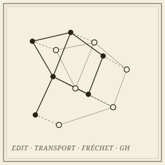

Geometric Graph Distances
Comparing embedded graphs: edit, transport, Fréchet, and Gromov–Hausdorff.

A geometric graph is a combinatorial graph together with an embedding in Euclidean space, and it carries both kinds of structure at once. Comparing two of them is a central problem wherever networks are measured rather than designed: reconstructed road maps against ground truth, molecular skeletons, vascular and neuronal trees. The distances proposed for the task pull in different directions—some are true metrics but NP-hard, some are fast but blind to the geometry, some are stable and some are not.
This project organizes that landscape by what governs usefulness: the metric axioms, the computational complexity, and the stability of each distance under perturbations of the embedding. It then asks what the organization is for: which comparisons need a matching-based distance, which are better served by an isometry-invariant descriptor, and how fast either can be computed.
Work in this line
Edit, transport, traversal, distortion.
- Distances Between Geometric Graphs: A Survey of Metric and Computational Properties—an invited chapter for the AMS Contemporary Mathematics volume on Geometric Data Science: edit-based, transport-based, and correspondence-based distances compared on metric axioms, complexity, and stability, with the open problems collected. In preparation.
- Distance Measures for Geometric Graphs—with Carola Wenk; the geometric edit distance and geometric graph distance, their metric properties, and the NP-hardness of computing them. Computational Geometry: Theory and Applications.
- Graph Mover’s Distance: An Efficiently Computable Distance Measure for Geometric Graphs—a transport-based alternative that is computable in polynomial time. CCCG 2023.
- Metric and Path-Connectedness Properties of the Fréchet Distance for Paths and Graphs—with Erin Chambers, Brittany Fasy, Benjamin Holmgren, and Carola Wenk. CCCG 2023.
Open questions
Complete, fast, and stable—pick three.
Whether an isometry-invariant descriptor of a geometric graph can be complete, distinguishing every pair of non-isometric graphs, and still be computed in polynomial time; how much of the modern machinery for fast and approximate optimal transport carries over to the distances between such invariants; and the metric geometry of the space of embedded graphs itself—its connectedness, its geodesics, and what a small perturbation of the embedding is allowed to do. A student thread asks the learning version: when can a graph neural network be trained to match geometric graphs, and what does it certify when it does?
Collaborators
A former advisor and a new collaborator.
- Carola Wenk, Tulane University
- Vitaliy Kurlin, University of Liverpool
- Erin Chambers, University of Notre Dame
- Brittany Fasy, Montana State University